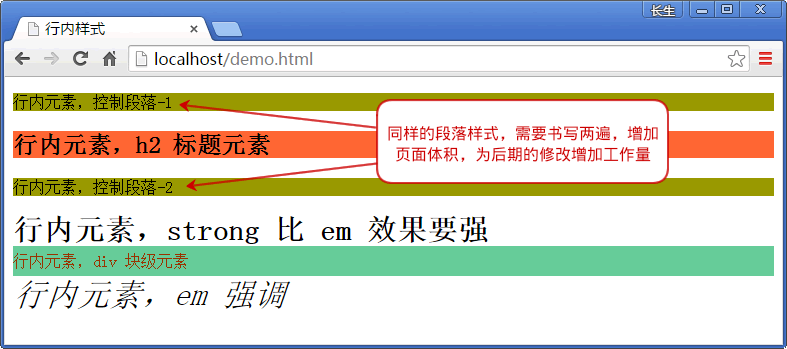
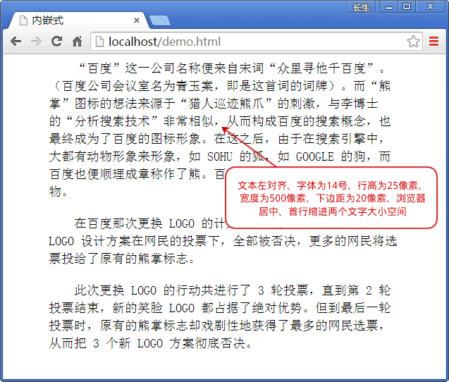
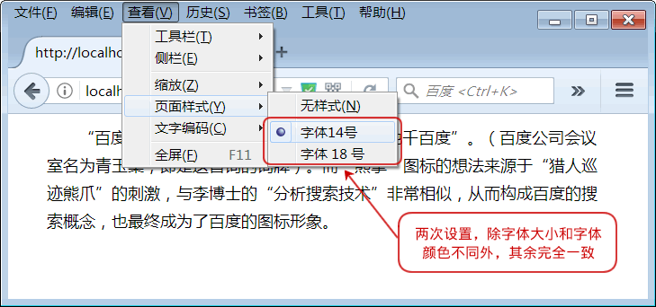
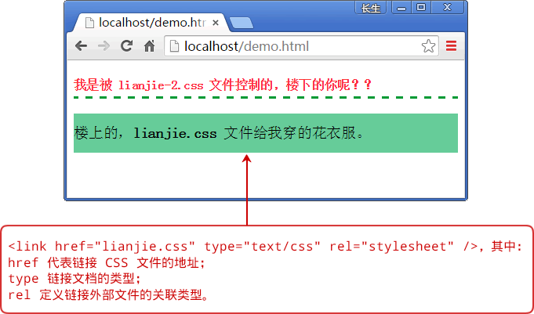
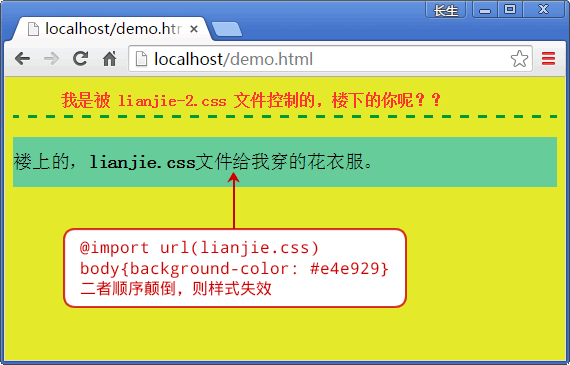

HTML嵌入CSS样式（四种方法）
HTML 仅能呈现一些信息，表现能力非常有限，需要结合 CSS 一起使用，以使页面更加精美。
CSS 样式既可以作为单独的文件（
第1种和第2种方法都是将 CSS 样式写到当前 HTML 文档中，第3种和第4种方法都是将 CSS 样式放在外部文件中，然后再导入到当前 HTML 文档中。
【示例1】针对段落、<h2> 标签、<em> 标签、<strong>标签以及 <div> 标签，分别应用 CSS 行内样式。
在上面示例中，行内样式由 HTML 元素的 style 属性嵌入，即将 CSS 代码放入
段落 <p> 标签设置背景色为褐色（background-color: #999900），标题 <h2> 标签设置背景色为红色（background-color: #FF6633）。
<strong> 标签设置字体为 30 像素（font-size:30px;），<div> 标签设置高度和行高为 30 像素以及进行背景色、颜色的设置（background-color:#66CC99; color:#993300; height:30px; line-height:30px;），<em> 标签设置字体大小为相对单位（font-size: 2em;）。
两个段落 <p> 标签，虽内容不同，但使用一样的背景色设置，却添加两次 CSS 行内属性设置背景色 background-color: #999900。
行内元素虽然编写简单，但通过示例可以发现存在以下缺陷：
网络上有些网页通过查看源文件可以看到这种编写方式，虽然一个网页只有一部分是如此做的， 但需要分情况：
【示例2】为段落设置内嵌式样式书写方法，减少代码量。
在上面示例中，段落进行如下设置：文本左对齐、字体为 14 号、行高 25 像素、宽度 500 像素、下边距 20 像素、浏览器下居中、首行缩进两个文字大小空间。首行缩进使用相对单位，此设置的作用是当字体大小改变时（如
行内样式带来了样式修改的不方便，例如上个示例中两个段落都使用同样的样式，但需要编写两遍；而使用内嵌式样式后，就可以将所有的段落样式放在一起。
style 不仅可定义 CSS 样式，还可以定义 JavaScript 脚本，故使用 style 时需要注意。当 style 的 type 值为
【示例3】分别为火狐浏览器设置两种字体大小样式，通过火狐“查看”菜单进行修改。
在上面不例中，通过
【示例4】使用链接式为 HTML 代码应用样式，书写、更改方便。
在上面示例中，通过 link 链接两个 CSS 文件，且都有效，这也是网站制作者将公共部分放入一个 CSS 文件，当前页面样式编写新的样式文件。
lianjie.css 文件代码：
lianjie-2.css 文件代码：
链接式样式使 CSS 代码和 HTML 代码完全分离，达到结构与样式的分开，使 HTML 代码专门构建页面结构，而美化工作由 CSS 完成。
链接式导入 CSS 样式的好处：
【示例5】导入样式表 lianjie.css 和 daoru.css 以及书写 <body> 标签的背景色，注意导入样式表和 <body> 标签样式的前后不可颠倒。
在上面示例中，必须是
lianjie.css 文件代码，同上一个示例即链接式。
daoru.css 文件代码：
CSS 样式既可以作为单独的文件（
.css类型的文件）引入到 HTML 文档中，也可以直接写在 HTML 文档中，大致分为如下四种方法：
- 行内样式：使用 HTML 标签的 style 属性定义 CSS 样式；
- 内嵌样式：使用 <style> 标签在 HTML 文档头部（<head> 和 <head> 之间）定义 CSS 样式；
- 链接式：使用 <link> 标签引入外部 CSS 样式表文件。
- 导入式：使用 @import 命令导入外部 CSS 样式表文件。
第1种和第2种方法都是将 CSS 样式写到当前 HTML 文档中，第3种和第4种方法都是将 CSS 样式放在外部文件中，然后再导入到当前 HTML 文档中。
1. 行内样式（内联样式）
行内样式就是把 CSS 样式直接放在代码行内的标签中，一般都是放入标签的style属性中，由于行内样式直接插入标签中，故是最直接的一种方式，同时也是修改最不方便的样式。【示例1】针对段落、<h2> 标签、<em> 标签、<strong>标签以及 <div> 标签，分别应用 CSS 行内样式。
<!doctype html>
<html>
<head>
<meta charset="UTF-8">
<title>行内样式</title>
</head>
<body>
<p style="background-color: #999900">行内元素，控制段落-1</p>
<h2 style="background-color: #FF6633">行内元素，h2 标题元素</h2>
<p style="background-color: #999900">行内元素，控制段落-2</p>
<strong style="font-size:30px;">行内元素，strong 比 em 效果要强</strong>
<div style="background-color:#66CC99; color:#993300; height:30px; line-height:30px;">行内元素，div 块级元素</div>
<em style="font-size:2em;">行内元素，em 强调</em>
</body>
</html>
页面演示效果如下图所示：

图1：行内样式的应用
图1：行内样式的应用
在上面示例中，行内样式由 HTML 元素的 style 属性嵌入，即将 CSS 代码放入
style=""引号内即可，多个 CSS 属性值则通过分号;间隔。例如示例中的 <div> 标签：
<div style="background-color:#66CC99; color:#993300; height:30px; line-height:30px;">行内元素，div 块级元素 </div>
段落 <p> 标签设置背景色为褐色（background-color: #999900），标题 <h2> 标签设置背景色为红色（background-color: #FF6633）。
<strong> 标签设置字体为 30 像素（font-size:30px;），<div> 标签设置高度和行高为 30 像素以及进行背景色、颜色的设置（background-color:#66CC99; color:#993300; height:30px; line-height:30px;），<em> 标签设置字体大小为相对单位（font-size: 2em;）。
两个段落 <p> 标签，虽内容不同，但使用一样的背景色设置，却添加两次 CSS 行内属性设置背景色 background-color: #999900。
行内元素虽然编写简单，但通过示例可以发现存在以下缺陷：
- 每一个标签要设置样式都需要添加 style 属性。
- 与过去网页制作者将 HTML 的标签和样式糅杂在一起的效果不同的是，现在是通过 CSS 编写行内样式，过去釆用的是 HTML 标签属性实现的样式效果。虽方式不同，但导致的后果是一样的：后期维护成本高，即当修改页面时需要逐个打开网站每个页面一一修改，根本看不到 CSS 所起到的作用。
- 添加如此多的行内样式，页面体积大，门户网站若釆用这种方式编写，那将浪费服务器带宽和流量。
网络上有些网页通过查看源文件可以看到这种编写方式，虽然一个网页只有一部分是如此做的， 但需要分情况：
- 若网页制作者编写这样的行内样式，可以快速更改当前样式，不必考虑以前编写的样式冲突问题；
- 网页中若存在这种情况则是后台编辑时，通过编辑器生成的样式，或后台未开发完整，需为编辑人员开发可选择样式的选项而非通过编辑器直接改变颜色、粗细、背景色、倾斜等效果。
2. 内嵌样式
内嵌样式通过将 CSS 写在网页源文件的头部，即在 <head> 和 <head> 之间，通过使用 HTML 标签中的 <style> 标签将其包围，其特点是该样式只能在此页使用，解决行内样式多次书写的弊端。【示例2】为段落设置内嵌式样式书写方法，减少代码量。
<!doctype html>
<html>
<head>
<meta charset="utf-8">
<title>内嵌式</title>
<style type="text/css">
p{
text-align: left; /*文本左对齐*/
font-size: 18px; /*字体大小 18 像素*/
line-height: 25px; /*行高 25 像素*/
text-indent: 2em; /*首行缩进2个文字大小空间*/
width: 500px; /*段落宽度 500 像素*/
margin: 0 auto; /*浏览器下居中*/
margin-bottom: 20px; /*段落下边距 20 像素*/
}
</style>
</head>
<body>
<p>“百度”这一公司名称便来自宋词“众里寻他千百度”。（百度公司会议室名为青玉案，即是这首词的词牌）。而“熊掌”图标的想法来源于“猎人巡迹熊爪”的刺激，与李博士的“分析搜索技术”非常相似，从而构成百度的搜索概念，也最终成为了百度的图标形象。在这之后，由于在搜索引擎中，大都有动物形象来形象，如 SOHU 的狐，如 GOOGLE 的狗，而百度也便顺理成章称作了熊。百度熊也便成了百度公司的形象物。</p>
<p>在百度那次更换 LOGO 的计划中，百度给出的 3 个新 LOGO 设计方案在网民的投票下，全部被否决，更多的网民将选票投给了原有的熊掌标志。</p>
<p>此次更换 LOGO 的行动共进行了 3 轮投票，直到第 2 轮投票结束，新的笑脸 LOGO 都占据了绝对优势。但到最后一轮投票时，原有的熊掌标志却戏剧性地获得了最多的网民选票，从而把 3 个新 LOGO 方案彻底否决。</p>
</body>
</html>
页面演示效果如下图所示：

图2：内嵌样式的应用
图2：内嵌样式的应用
在上面示例中，段落进行如下设置：文本左对齐、字体为 14 号、行高 25 像素、宽度 500 像素、下边距 20 像素、浏览器下居中、首行缩进两个文字大小空间。首行缩进使用相对单位，此设置的作用是当字体大小改变时（如
font-size: 18px;）依然能够实现缩进两个文字大小空间。行内样式带来了样式修改的不方便，例如上个示例中两个段落都使用同样的样式，但需要编写两遍；而使用内嵌式样式后，就可以将所有的段落样式放在一起。
style 不仅可定义 CSS 样式，还可以定义 JavaScript 脚本，故使用 style 时需要注意。当 style 的 type 值为
text/css时，内部编写 CSS 样式；若 style 的 type 值为text/javascript时，内部编写 JavaScript 脚本。
style 标签的 title 属性
style 中有一个比较特殊的属性 title，使用 title 可以为不同的样式设置一个标题，浏览者就可以根据标题选择不同的样式达到浏览器中切换的效果，但 IE 浏览器不支持，Firefox 浏览器支持此效果。【示例3】分别为火狐浏览器设置两种字体大小样式，通过火狐“查看”菜单进行修改。
<!doctype html>
<html>
<head>
<meta charset="utf-8">
<style type="text/css" title="字体14号">
p{
text-align: left; /*文本左对齐*/
font-size: 14px; /*字体大小 14 像素*/
line-height: 25px; /*行高 25 像素*/
text-indent: 2em; /*首行缩进两个文字大小空间*/
width: 500px; /*段落宽度 500 像素*/
margin: 0 auto; /*浏览器下居中*/
}
</style>
<style type="text/css" title="字体 18 号">
p{
text-align: left; /*文本左对齐*/
font-size: 18px; /*字体大小 18 像素*/
line-height: 25px; /*行高 25 像素*/
text-indent: 2em; /*首行缩进两个文字大小空间*/
width: 500px; /*段落宽度 500 像素*/
margin: 0 auto; /*浏览器下居中*/
color: #6699FF; /*字体颜色的改变*/
}
</style>
</head>
<body>
<p>“百度”这一公司名称便来自宋词“众里寻他千百度”。（百度公司会议室名为青玉案，即是这首词的词牌）。而“熊掌”图标的想法来源于“猎人巡迹熊爪”的刺激，与李博士的“分析搜索技术”非常相似，从而构成百度的搜索概念，也最终成为了百度的图标形象。</p>
</body>
</html>
页面演示效果如下图所示。

图3：火狐浏览器内嵌式更换样式
图3：火狐浏览器内嵌式更换样式
在上面不例中，通过
<style type="text/css" title="名称">定义了两种字体大小，通过火狐浏览器“查看”菜单下的“页面样式”子菜单中有两个选项：字体14号、字体18号，默认情况下显示的是第一次书写的<style type="text/css" title="名称">，通过菜单可以改变该页面样式。
3. 链接式
链接式通过 HTML 的 <link> 标签，将外部样式表文件链接到 HTML 文档中，这也是网络上网站应用最多的方式，同时也是最实用的方式。这种方法将 HTML 文档和 CSS 文件完全分离，实现结构层和表示层的彻底分离，增强网页结构的扩展性和 CSS 样式的可维护性。【示例4】使用链接式为 HTML 代码应用样式，书写、更改方便。
<!doctype html>
<html>
<head>
<meta charset="utf-8">
<title></title>
<link href="lianjie.css" type="text/css" rel="stylesheet" />
<link href="lianjie-2.css" type="text/css" rel="stylesheet" />
</head>
<body>
<p>我是被 lianjie-2.css 文件控制的，楼下的你呢？？</p>
<h3>楼上的，<span>lianjie.css</span> 文件给我穿的花衣服。</h3>
</body>
</html>
页面演示效果如下图所示：

图4：链接式的应用
图4：链接式的应用
在上面示例中，通过 link 链接两个 CSS 文件，且都有效，这也是网站制作者将公共部分放入一个 CSS 文件，当前页面样式编写新的样式文件。
lianjie.css 文件代码：
h3{
font-weight: normal; /*取消标题默认加粗效果*/
background-color: #66CC99; /* 设置背景色 */
height: 50px; /*设置标签的高度*/
line-height:50px; /* 设置标签的行高 */
}
span{
color: #FFOOOO; /* 字体颜色 */
font-weight:bold; /* 字体加粗 */
}
lianjie-2.css 文件代码：
p{
color: #FF3333; /*字体颜色设置*/
font-weight: bold; /* 字体加粗 */
border-bottom: 3px dashed #009933; /* 设置下边框线 */
line-height: 30px; /* 设置行高 */
}
链接式样式使 CSS 代码和 HTML 代码完全分离，达到结构与样式的分开，使 HTML 代码专门构建页面结构，而美化工作由 CSS 完成。
链接式导入 CSS 样式的好处：
- CSS 文件可以放在不同的 HTML 文件中，使网站所有页面样式统一；
- 再者将 CSS 代码放入一个 CSS 文件中便于管理、减少代码以及维护时间；
- 当修改 CSS 文件时，所有应用此 CSS 文件的 HTML 文件都将更新，而不必从服务器上将所有的页面取回再修改完毕后上传。
4. 导入样式
导入样式使用 @import 命令导入外部样式表。导入样式有 6 种书写方式：
@import daoru.css;
@import 'daomxss';
@import "daoru.css";
@import url(daoru.css);
@import url('daoru.css');
@import url("daoru.css");
【示例5】导入样式表 lianjie.css 和 daoru.css 以及书写 <body> 标签的背景色，注意导入样式表和 <body> 标签样式的前后不可颠倒。
<html>
<head>
<meta charset="utf-8">
<title></title>
<style type="text/css">
@import url(lianjie.css);
@import url(daoru.css);
body { background-color: #e4e929; }
</style>
</head>
<body>
<div>
<p>我是被 lianjie-2.css 文件控制的，楼下的你呢？？</p>
<h3>褛上的，<span>lianjie.css</span>文件给我穿的花衣服。</h3>
</div>
</body>
</html>
页面演示效果如下图所示。

图5：导入样式应用
图5：导入样式应用
在上面示例中，必须是
@import url("lianjie-2.css"); p{text-indent: 3em;}，而不能是p{text-indent:3em;} @import url("lianjie-2.css");，否则将导入效果无效。在 CSS 文件中也需要将 @import 放在前面，后面加入 CSS 样式，否则也是无效。lianjie.css 文件代码，同上一个示例即链接式。
daoru.css 文件代码：
@import url("lianjie-2.css");
p { text-indent: 3em; }
关注公众号「站长严长生」，在手机上阅读所有教程，随时随地都能学习。内含一款搜索神器，免费下载全网书籍和视频。

微信扫码关注公众号